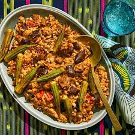

Mbahal

Description
Benachin is also known as jollof rice. It literally translates to one pot in the wollof language. It is a hugely popular dish in west africa, with each country priding itself on having the best benachin. It is rich and delicious, better than any alcohol or drug out there, as it completely satiates.
Ingredients
- 6 habanero chili
- 4 sweet peppers
- 2 thumb sized ginger
- 1 tsp fennel seeds
- 1/2 tsp black pepper
- 1 tsp salt
- Bouillon seasoning according to taste
- 4 scallions
- 1 cup parsley
- Cassava/yuca
- Green and red bell peppers
- 8 cups broken jasmine or basmati rice
- Fish of choice
- Oil for frying
- Tomatoes
- Tomato paste
Steps